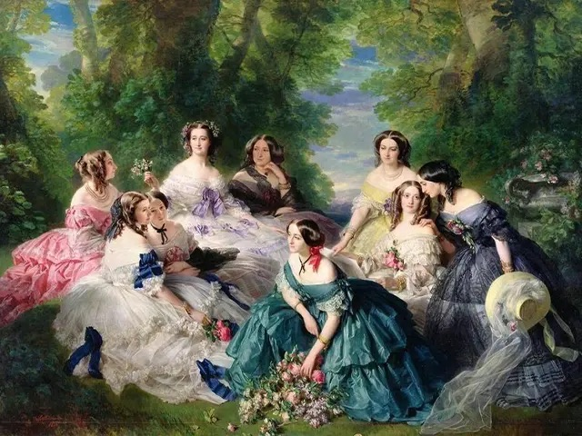

Série audio · mes petites visites
Une plongée sonore dans l'intimité de la cour de l'Impératrice Eugénie — secrets de salon, étiquette et symboles cachés derrière le chef-d'œuvre de Winterhalter.
Épisode 1 · Cour & étiquette
La collection
Chaque épisode s'ouvre dans une pochette animée, au rythme de la voix.
L'œuvre, point par point
Cliquez sur les pastilles pour lire l'œuvre — chaque détail nourrit un épisode.
Détail
Touchez une pastille dorée sur le tableau pour révéler sa lecture.
Votre guide
Sophie Lefaure van Moorsel. C'est moi qui vous accompagne, épisode après épisode — guide-conférencière, j'ai fait de Paris et de son histoire mon terrain de jeu, et du Second Empire une passion qui ne me quitte pas.
Fille d'architecte, j'ai grandi l'œil levé vers les façades. Après des études de sciences politiques et des années passées à porter la parole de grandes institutions, j'ai choisi de raconter la ville autrement : par ses salons, ses portraits et ses petites histoires — avec, je l'avoue, une pointe d'humour belge.
Sophie
Le rendez-vous
Chaque épisode est une petite visite : on pousse la porte d'un salon des Tuileries, on suit Eugénie dans les jardins de Compiègne, on écoute le froissement des crinolines.
Ne rien manquer
Épisode 1 · Cour & étiquette